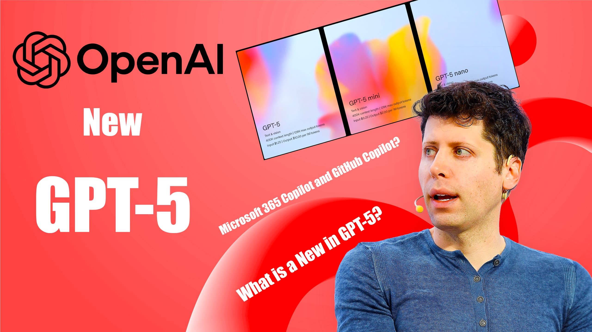
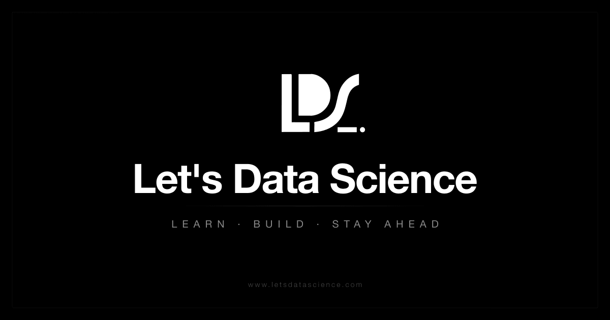
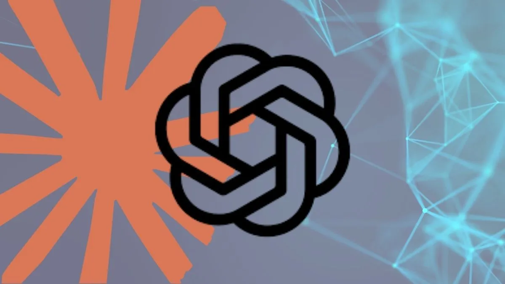

Janet 快车箱
AI Daily Briefing
2026-07-07
VOL 280
对中国创作者和中小企业来说，便宜模型只是入场券，真正影响生死的是权限、数据、审计和失败成本。能把 Agent 关进 sandbox、能解释每一次工具调用、能把用户数据训练开关说清楚的产品，才有资格进入业务；只会喊自动化的工具，会先被安全和法务拖住。
接下来 2-4 周盯三件事：OpenAI 和 Tencent 这类轻量模型会不会继续压低 fallback 成本；AWS、Vercel、Databricks 这类平台会不会把 Agent 执行层做成新收费入口；AI 勒索、AI spam、AI 眼镜隐私争议会不会逼出更硬的企业采购门槛。

OpenAI Help Center 7 月 6 日 release notes 显示，GPT-5.5 Instant Mini 正在 ChatGPT 中推出，替代 GPT-5.3 Instant Mini，作为用户触达 GPT-5.5 Instant 或 Auto rate limit 后的 fallback model。OpenAI 特别说明该模型不会出现在 model picker 中，也不影响 API 或 Codex。
VentureBeat 7 月 6 日报道，Tencent 发布 Hy3，一款 295B 参数模型，并使用 Apache 2.0 license。报道称 Hy3 在多项评测中可与 GLM-5.1 和 GLM-5.2 竞争，体量约为对手一半，但编码能力仍是明显短板；Techmeme 同步摘录称该模型此前已在 4 月预览。
AWS News Blog 7 月 6 日 weekly roundup 显示，Claude Sonnet 5 已进入 AWS 相关服务更新，同时提到 Amazon WorkSpaces for AI agents、Amazon Bedrock、SageMaker AI 等更新。AWS 把新模型可用性和 Agent 工作区放在同一轮公告里，目标是把模型调用接到企业云执行环境。

LetsDataScience 7 月 6 日汇总称，Databricks 将与 OpenAI 的合作重点转向生产级 agents，通过 Databricks Agent Tools 让 Codex 和 GPT-powered agents 以 governed access 方式连接企业数据和 MCPs。Databricks 此前也在 release notes 中持续加入 hosted model 与 governance 能力。
Cloud Native Now 7 月 6 日报道，Vercel 现在允许开发者把任意 Dockerfile 直接部署到生产，运行方式是 serverless function 并自动扩缩容。报道同时指出，Vercel 仍有 function limits、无 durable storage 等边界；这让前端平台进一步吃进后端和 AI app 部署场景。
Google for Developers Blog 在 7 月 6 日列出 MaxText elastic training 更新，标题称团队终止一个 TPU mid-training 后，训练可在数秒内恢复。该内容属于 Google Cloud AI Cloud how-to，重点是弹性训练和故障恢复，而不是单纯提高 benchmark。
Canada Department of National Defence 7 月 6 日发布 AI glasses policy update，讨论 AI-enabled eyewear 在国防环境中的使用边界。公告配图和说明都指向具备记录、通信和 AI 能力的智能眼镜，提示此类设备正在进入更敏感的组织场景。

Malwarebytes 7 月 6 日报道，Google、FBI 和合作伙伴打击了 NetNut residential proxy network。报道称该网络依赖大量被劫持设备，常被犯罪分子利用；在 AI 自动化攻击和大规模抓取场景下，住宅代理基础设施正成为执法和平台治理重点。
TechCrunch 报道，smart glasses 公司 Even Realities 完成 1.5 亿美元融资，估值达到 10 亿美元，本轮由 Meituan 和 Tencent 领投。公司主打 camera-free smart glasses，与 Meta、Snap 等带相机和 AI assistant 的路线形成差异化。
Blocks & Files 7 月 6 日报道，Samsung 和 SK Hynix 正扩大芯片厂支出，押注 HBM、DRAM 和 NAND 受 AI data center 需求拉动的内存 super-cycle。报道还提到 SK Telecom、GS 和 Naver 计划投入约 550 万亿韩元建设总计 8.4GW 的 AI data centers。
TechFundingNews 7 月 6 日报道，法国 workforce management 公司 Skello 完成 2 亿欧元融资，并强调创始人在本轮后持股比例反而更高。虽然 Skello 不是纯 AI 公司，但在欧洲企业软件融资环境回暖中，AI 自动排班、劳动力优化和中后台效率工具仍是资本关注方向。
PointFive 7 月 6 日发布 Coding Task Index，用一个标准 coding task 估算不同模型的成本，假设 200K input 和 30K output。该指数列出 Claude Haiku 4.5、Gemini 3.1 Pro、GPT-5.3-Codex、Claude Sonnet 5 等模型的单任务价格，帮助团队按任务而不是按 token 幻觉比较成本。